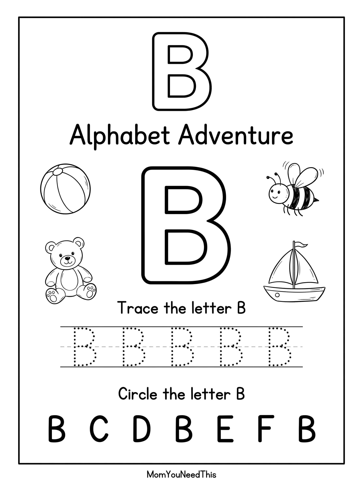

Free Letter B Coloring Page B is for Bear 🐻
This free printable letter b coloring pages gives toddlers and preschoolers a fun, no-prep way to build creativity and fine motor skills. Just download, print, and let them color.
🔤 How To Use This Printable
- Download and print the coloring page on letter-size paper — print a few extras so there is no fighting over favorites.
- Set out crayons, markers, or colored pencils and let your child choose their colors.
- Color together or side by side, chatting about the pictures as they come to life.
- Show off the masterpiece on the fridge or in a learning binder to celebrate the effort.

🎨 Download Your Letter B Coloring Page
A fun coloring activity to help your child become familiar with the letter B while encouraging creativity and early alphabet skills.
⬇️ Download Free Coloring Page
🎁 Free printable for toddlers & preschoolers
What Your Child Practices
📚 Continue The Alphabet Adventure
Discover more free alphabet coloring pages and activities for your little learner.
⭐ Explore All LettersMore Free Toddler Resources
Discover potty training tools, learning activities, coloring pages, and more free resources to make learning fun.
🎁 View Free Resources❓ Letter B Coloring Pages FAQ
Is this letter b coloring pages printable really free?
Yes — this letter b coloring pages printable is 100% free to download and print at home. No signup and no payment needed. Just tap the download button and print as many copies as you like.
What ages is this printable best for?
It is made for toddlers and preschoolers. Little ones can enjoy it with a grown-up’s help, while older preschoolers can work on it more independently.
What should we color with?
Crayons, washable markers, or colored pencils all work great. For young toddlers, chunky crayons are the easiest to grip.
🔗 More Free Printables You’ll Love
- Free Alphabet Coloring Pages Free printable alphabet coloring pages for little learners.
- Free Letter C Coloring Pages Free printable letter c coloring pages for little learners.
- Free Letter A Formation Practice Free printable letter a formation practice for little learners.
- Free Letter A Sound Match Free printable letter a sound match for little learners.